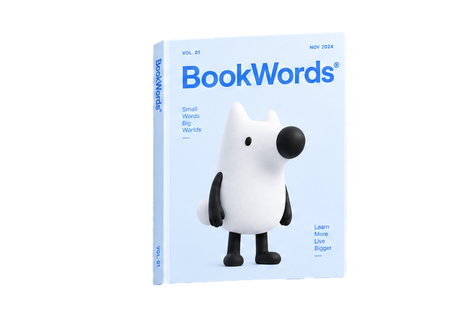
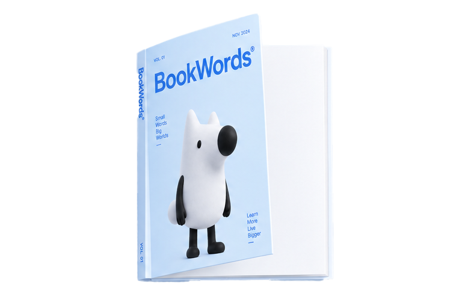
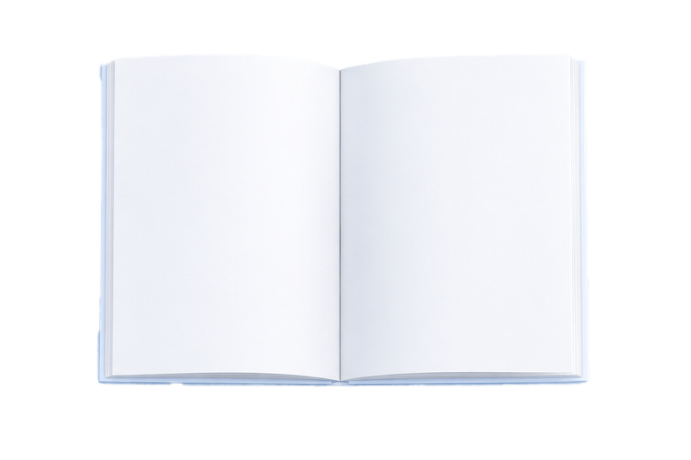

WORD JOURNAL · ZHIHU ENGLISH DAILY
把生词，读成 你真正关心的事really!
从知乎的问题与知识出发，挑选今天想记住的单词，生成一篇有观点、有场景、适合分栏阅读的英文日报。
把生词，读成你真正关心的事。
从知乎的真实问题与知识出发，挑选今天想记住的单词，生成一篇有观点、有场景、适合分栏阅读的英文日报——单词不再来自词表，而来自你正在关心的事情。
两千词，按难度与词性摊开。
全词库即搜即得：按 CEFR 等级、词性、释义筛选，看中的词一键收进单词本，随时导出。
选几个词，生成一篇英文日报。
设定主题与目标词，AI 在虚构小镇 Bellmere 的世界观里写出一篇带观点的英文报道，双栏排版、首字下沉，读完刚好记住。
一周的文章，装订成一本刊物。
整刊翻书式阅读：封面、头版、逐篇分页，像杂志一样翻阅你这一周读过的所有故事，支持 PDF 与 Word 导出。
挑出目标词
目标词自然融入
生词即点即查
整刊导出收藏
From words,
to pages.
把今天，读成记得住的样子。
点上面的磁贴开始，或直接往左拖动首页的书。
Small words,
big worlds.
翻开属于
你的那一页。
MY COLLECTION
ZHIHU ENGLISH DAILY
日报存档
每次生成都会保存为一期日报，单篇可单独练习。
文章练习
日报存档
把知乎的知识问题改写成一篇适合今天阅读的英文短文。
今天尚未生成今天还没有打卡
完成一次打卡，记录你的学习节奏。
我的学习空间
未登录 · 登录后同步加密数据
信息尚未更新
LIBRARY · 全词库检索
ABOUT THIS PROJECT · 关于本项目
刊见单词 Bookwords
把生词放进知乎知识的日常问题——生成一篇双语英语日报，再用练习把它们留在脑海里。
它如何工作
一条从「生词」到「记住」的完整流水线
- 收集在搜索词库找到要记的词，收藏进单词本
- 选题选择原创灵感，或从知乎热榜、故事、知识与回答中挑选素材
- 出版AI 把目标词写进一篇 Zhihu 双语日报（英文正文 + 中文对照 + 记忆口诀）
- 阅读与练习翻书阅读日报，用填空练习把目标词填回故事
核心功能
六大能力，构成完整的记忆闭环
搜索词库
搜索、筛选并收藏要记的词
单词本
集中管理收藏的单词与日报存档
文章生成
匹配知乎日报、热榜与故事题材，或使用今日单词自由创作
知乎英语日报
报纸版式阅读，支持 PDF / Word 导出
记忆练习
把目标词填回故事空缺，检验记忆
每日打卡
用打卡节奏沉淀每日学习
知乎开放平台 · 黑客松能力
把知乎内容，变成你的英文日报选题
知乎内容 → 日报选题
综合相关回答、文章、热榜、故事与知识题材；赞同数作为参考，不设置统一硬门槛。
外部 AI → 双语日报
使用设置页配置的 OpenAI 兼容接口生成双语学习文章；输出异常时自动校验纠正，不生成占位内容。
版权署名
每篇内容都以中文小字标注来源；使用知乎素材时同时保留标题、作者与赞同数。
额度保护
搜索与热榜使用持久缓存；合格的生成文章短时缓存，减少外部 API 的重复调用与成本。
技术栈
说明与免责声明
所有日报均为 AI 生成的英语学习材料，并非真实新闻；改编自知乎的内容均已署名原作者，仅用于学习练习。